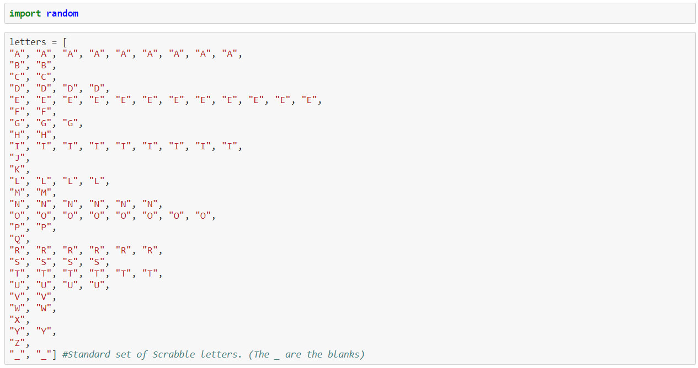
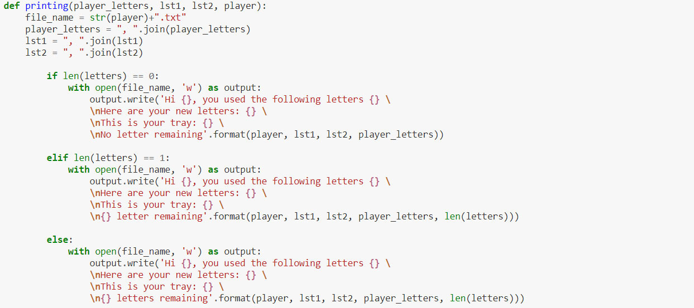
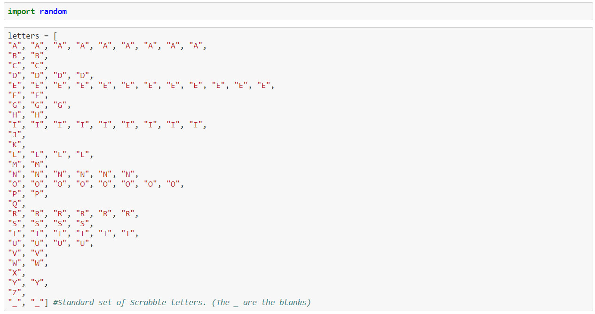
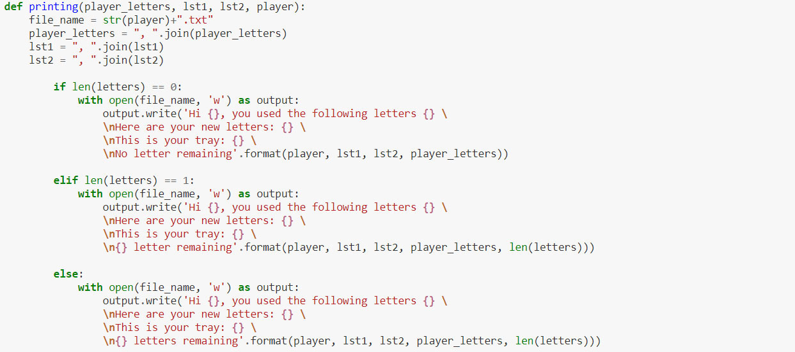

What I will write about here is not technically data science,
but is a little project I had a lot of fun working on.
My wife and I like to play scrabble, but due to the current circumstances,
we were unable to be together for a long time. She was in New York and I in Paris, France.
Still, we wanted to be able to play together
(because there was no reason why she shouldn’t be allowed to keep beating me at the game).
We wanted to each use our boards and play together through Zoom, Skype, FaceTime or any other visioconference software.
Seemed simple enough with no need for anything but what we already had, until we realized that we would have to each pick our letters
from the same set of tiles without having the other player know which letters were picked.
So I started thinking about how we could get around this.
I will quickly expose the first solution I imagined : the idea was to have a list of players set up
inside the code and have it ask which player I wanted to give a certain number of letters drawn
from a common list to. This was fairly straightforward, and the biggest challenge was to imagine a
solution that would give her letters without me knowing (since I would be the one operating the program).
I ended up setting up a shared folder and having the program saving .txt files
for each player containing the number of letters I asked it to.
It worked well, and we were able to play many times.
However, there were two points that I was not satisfied with :
firstly, it didn’t feel like a very elegant solution.
Everything was hard-coded, and if I had wanted to add any player,
I would have had to rewrite or copy paste parts of the code;
secondly, there was no way to trade in letters in case one the players needed to.
I felt like a better solution could be achieved, so I came up with a second solution,
using what I already had been written and building upon it.
The two versions carry several key differences. Firstly, instead of on one long function,
I wrote several smaller ones, each carrying their own tasks. This is a more readable and elegant way to
have the program run, and much easier to debug.
The other main difference is that the first version did not keep a record of what tray each player had during the
previous round. Its goal was merely to give as many letters as it was asked to from a list of the 100 scrabble letters,
and removing the same letters from that list in order from the game to continue.
This was the main issue to create a trade feature:
how can you trade letters if the program doesn’t even remember what letters you have ?
The second version works in a different way.
First up, a list containing all of the letters is created. Then, a dictionary is set and each player is added
as a key and their tray of letters as a value to it inside the scrabble() function.
It therefore removes the need for a hard coded solution and allows from the start to add as many players as needed.

Secondly, instead of manually asking for seven letters for the first round
which is something that always happens anyway when you start playing -
the start_game() function takes care of it automatically as many times as there are players
and saves each tray in distinct .txt files. After that, the game() fonction is called
It first checks if there are any letters left in the original set.
If there are, it then asks for the player making a move, and what the move is (play letters or trade letters).
Each response leads to two other functions:
play() or trade(). Any other response leads to an error and calls on the game() function again.
The play() function asks what letters have been used and checks if they are in the player’s tray.
If they are, they are removed from the players tray and as many letters are taken from the common set to be given
to the player.
If this is the end of the game and that there aren’t enough letters, the player gets the rest of what is available.
The trade() function works in a similar way in reverse.
Instead of simply taking letters from the player’s tray and replacing them, they are also put back in the common set.
The other difference is that, as to keep the secrecy of the letters put back, they are accessed by index and not by value.
Finally, the last function to be called is printing().
This one is in charge of saving into a distinct file for each player which letters have been used (or traded),
which have been picked, the new state of the player’s tray, and the number of letters remaining.

And there it is!
I had a lot of fun working on this project and thinking about how to create a game feature using only Python.
What I will write about here is not technically data science, but is a little project I had a lot of fun working on.
My wife and I like to play scrabble, but due to the current circumstances, we were unable to be together for a long time. She was in New York and I in Paris, France. Still, we wanted to be able to play together (because there was no reason why she shouldn’t be allowed to keep beating me at the game). We wanted to each use our boards and play together through Zoom, Skype, FaceTime or any other visioconference software. Seemed simple enough with no need for anything but what we already had, until we realized that we would have to each pick our letters from the same set of tiles without having the other player know which letters were picked.
So I started thinking about how we could get around this.
I will quickly expose the first solution I imagined : the idea was to have a list of players set up inside the code and have it ask which player I wanted to give a certain number of letters drawn from a common list to. This was fairly straightforward, and the biggest challenge was to imagine a solution that would give her letters without me knowing (since I would be the one operating the program). I ended up setting up a shared folder and having the program saving .txt files for each player containing the number of letters I asked it to. It worked well, and we were able to play many times. However, there were two points that I was not satisfied with :
I felt like a better solution could be achieved, so I came up with a second solution, using what I already had been written and building upon it.
The two versions carry several key differences. Firstly, instead of on one long function, I wrote several smaller ones, each carrying their own tasks. This is a more readable and elegant way to have the program run, and much easier to debug. The other main difference is that the first version did not keep a record of what tray each player had during the previous round. Its goal was merely to give as many letters as it was asked to from a list of the 100 scrabble letters, and removing the same letters from that list in order from the game to continue. This was the main issue to create a trade feature: how can you trade letters if the program doesn’t even remember what letters you have ?
The second version works in a different way. First up, a list containing all of the letters is created. Then, a dictionary is set and each player is added as a key and their tray of letters as a value to it inside the scrabble() function. It therefore removes the need for a hard coded solution and allows from the start to add as many players as needed.
Secondly, instead of manually asking for seven letters for the first round which is something that always happens anyway when you start playing - the start_game() function takes care of it automatically as many times as there are players and saves each tray in distinct .txt files. After that, the game() fonction is called
It first checks if there are any letters left in the original set. If there are, it then asks for the player making a move, and what the move is (play letters or trade letters). Each response leads to two other functions: play() or trade(). Any other response leads to an error and calls on the game() function again.
The play() function asks what letters have been used and checks if they are in the player’s tray. If they are, they are removed from the players tray and as many letters are taken from the common set to be given to the player. If this is the end of the game and that there aren’t enough letters, the player gets the rest of what is available.
The trade() function works in a similar way in reverse. Instead of simply taking letters from the player’s tray and replacing them, they are also put back in the common set. The other difference is that, as to keep the secrecy of the letters put back, they are accessed by index and not by value.
Finally, the last function to be called is printing(). This one is in charge of saving into a distinct file for each player which letters have been used (or traded), which have been picked, the new state of the player’s tray, and the number of letters remaining.
And there it is! I had a lot of fun working on this project and thinking about how to create a game feature using only Python.